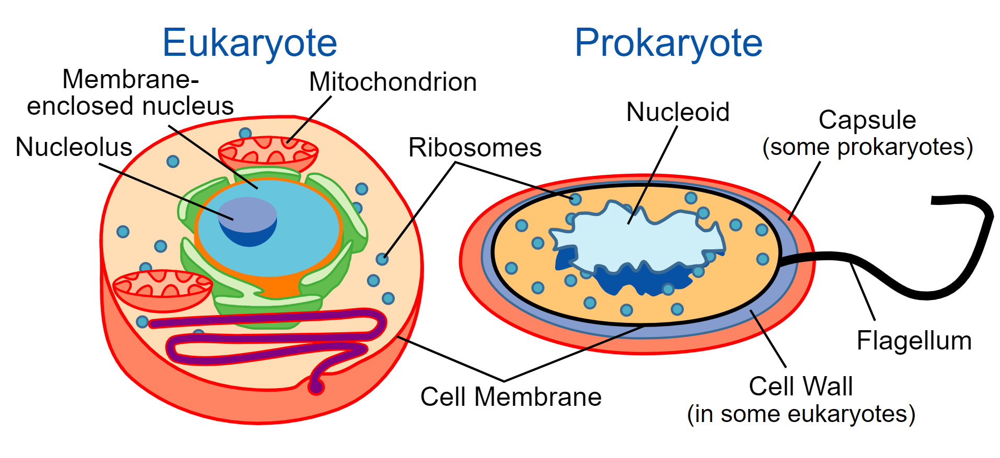

Biological classification image created for Wikimediasphere (Wikipedia and all the other Wikimedia sister projects). Peter Halasz. (User:Pengo), Public domain, via Wikimedia Commons.
In more detail
The field of taxonomy can get quite involved, but we can try to understand things simply. Note that precise classifications vary from source to source; for example some systems use 5 kingdoms, others 6, others still 7, etc.
Domains: Archaea, Bacteria, Eukarya
Archae and Bacteria are microorganisms. They are single-celled. Scientists refer to them as prokaryotes. Eukarya include plants, animals and fungi - typically more complex forms of life (though single-celled eukaryotes exist.) One of the biggest differences is that eukaryotes have cells that contain a nucleus, inside which genetic information is stored.
Comparison of eukaryotes vs. prokaryotes. Science Primer (National Center for Biotechnology Information). Vectorized by Mortadelo2005., Public domain, via Wikimedia Commons.
Kingdoms: Archaea, Bacteria, Protozoa, Chromista, Plantae, Fungi, Animalia.
Archaea, Bacteria, Protozoa and Chromista are simple forms of life (mostly single-celled.) Plantae are plants, Fungi are fungi (the plural of fungus) and Animalia are animals.

Phylogenetic and symbiogenetic tree of living organisms, showing the origins of eukaryotes and prokaryotes. Maulucioni y Doridí, CC BY-SA 3.0, via Wikimedia Commons.